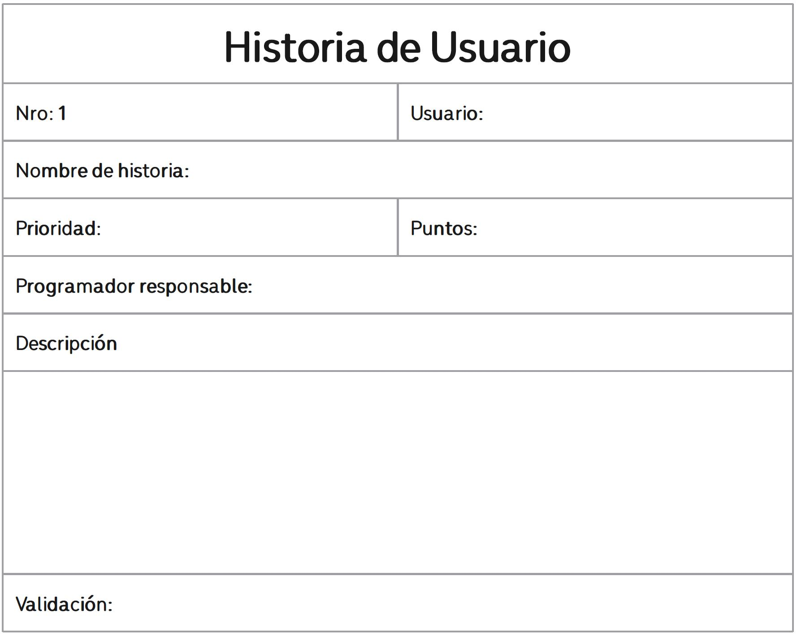

METODOLOGÍA XP
(Extreme Programming)
Características
Una metodología es un conjunto de principios, prácticas y artefactos estructurados en torno a una determinada filosofía.
Las características de la metodología XP son las siguientes:
- Comunicación constante entre el cliente y el equipo de desarrollo
- Respuesta rápida a los cambios constantes
- La planificación es un aspecto que permanece abierto, es decir, existe un cronograma flexible
- El software que funciona está por encima de cualquier otra documentación
- Se le da la misma importancia a los requisitos del cliente, como al trabajo en equipo y su bienestar
Refuerza tus conocimientos:
Según las características mencionadas, ¿a qué grupo corresponde la metodología XP?
Corriente Ágil Corriente Tradicional NingunaRoles
Se refiere a la estructuración del equipo de trabajo y otros que intervengan en el proyecto, de acuerdo a sus funciones y responsabilidades.
Los roles de la metodología XP son los siguientes:
 Cliente
Cliente
Es el encargado de definir los objetivos del proyecto, supervisar el desarrollo de dicho proyecto de acuerdo a sus necesidades y establecer las prioridades del mismo
 Programador
Programador
Su responsabilidad es ayudar a cumplir los objetivos del proyecto, analizar las condiciones del proyecto para definir un proceso óptimo, establece tiempos aproximados de desarrollo, estimar costos y realizar un modelado del proyecto que permita ser convertido en código funcional.
 Tester
Tester
Su responsabilidad es realizar pruebas al código desarrollado en busca de posibles errores. En base a su experiencia, debe ser capaz de observar posibles puntos críticos que pudieran causar pérdida de información o resultados incorrectos
Jefe de equipo
Su responsabilidad es la de organizar, asesorar y orientar al equipo de desarrollo y al cliente. También debe realizar un seguimiento del cumplimiento de los tiempos establecidos y de los posibles cambios que surjan por parte del cliente.
Refuerza tus conocimientos:
Marque el rol responsable de las siguientes funciones del equipo de desarrollo
| Función | Cliente | Programador | Tester | Jefe de equipo |
|---|---|---|---|---|
| Busca posibles errores en el código | ||||
| Estima el tiempo de desarrollo | ||||
| Orienta al equipo de desarrollo y al cliente | ||||
| Realiza el modelado del proyecto |
Fases
Las metodologías ágiles, por su carácter adaptativo y que permite un flujo constante de modificaciones, tiene un desarrollo iterativo, es decir, que sus avance se realizan tomando en cuenta avances funcionales.
Las fases que comprende la metodología XP son las siguientes:
 Planificación
Planificación
En esta etapa se realizarán las tareas de análisis de los requerimientos mediante una herramienta propia de XP, como son las Historias de Usuario. Se establecerán los módulos en los cuales se dividirá el proyecto y las prioridades que tendrán cada uno de ellos.
También se desarrollará un cronograma provisional que establezca tiempos estimados para el desarrollo de cada módulo.
 Diseño
Diseño
En esta etapa se realizarán las tareas de modelado, bocetado y creación de módulos básicos que sirvan de guías para posteriores iteraciones.
Codificación
En esta etapa se realizarán las tareas de creación del código funcional, utilizando una característica propias, como es la Programación en Parejas.
Tomando en cuenta el paradigma orientado a objetos, se desarrollará otro elemento propio de la metodología llamado Tarjetas CRC (Clase-Responsabilidad-Colaboración)
Pruebas
Las pruebas se realizan a la par de la codificación, ya que por el principio de la Programación en Parejas se alternan los roles de los programadores. Adicionalmente, el propio cliente puede realizar pruebas o proponer ciertos test al código en desarrollo
Lanzamiento
Una vez que se tiene un avance funcional que ha pasado las revisiones y cumple con lo establecido en la Historia de Usuario correspondiente, se realiza el proceso de liberación e incorporación en el producto estable
Refuerza tus conocimientos:
Selecciona en el orden correcto las fases de la metodología XP
| 1. |

|
|
| 2. | ||
| 3. | ||
| 4. | ||
| 5. |
Historias de Usuario
Las "historias de usuario" son una técnica utilizada para definir y describir los requisitos funcionales de un proyecto de software desde la perspectiva del usuario final o del cliente. Las historias de usuario son breves descripciones de funcionalidades o características que el sistema debe ofrecer, expresadas en un lenguaje claro y accesible para todos los miembros del equipo, incluyendo desarrolladores, diseñadores y cliente.
Las historias de usuario se centran en lo que un usuario necesita lograr o en los problemas que necesita resolver utilizando el software.
Cada historia se estructura generalmente de la siguiente manera:
Refuerza tus conocimientos:
Según lo visto hasta el momento, ¿en qué etapa se deben elaborar las Historias de Usuario? Haga clic en la etapa correcta.
Diagramas de Secuencia
Estos diagramas permiten diseñar los estados de los objetos de nuestro sismte, y nos muestra la forma en la que los objetos se comunican a través del tiempo.
Estos diagramas constan de los siguientes elementos:
- Objetos
- Son los elementos que representan las entidades dentro de nuestro sistema.
- Mensajes
- Los objetos envían mensajes entre sí, es decir, envían datos desde una entidad a otra. Y son representados de la siguiente forma:
- Tiempo
- La comunicación entre los objetos se realiza en un lapso de tiempo, que comienza cuando se envía el primer mensaje y culmina cuando se recibe el último mensaje.

Un esquema del diagrama de secuencia se muestra a continuación:

Refuerza tus conocimientos:
¿Cuál(es) de los siguientes tipos de mensaje NO se incluye(n) en los Diagramas de Secuencia?
Simple Doble Sincrónico Asíncrono de EsperaLas 12 prácticas
- El juego de la planificación
- Entregas pequeñas
- Metáfora
- Diseño simple
- Pruebas
- Refactorización
- Programación en parejas
- Responsabilidad colectiva
- Integración continua
- 40 horas a la semana
- Cliente in situ
- Estándares de código
Para planificar un proyecto se debe tomar en cuenta dos aspectos principales: las prioridades del negocio y la estimación técnica
Es responsabilidad de los desarrolladores dividir las historias en conjutnos de tareas y estimar su duración. La estimación del tiempo es una responsabilidad directa del desarrollador, no del cliente
Se debe poner en marcha un sistema simple de forma rápida y agregar nuevas versiones en ciclos cortos. Cada entrega nos dará una mejor perspectiva del proyecto final.
Una simple historia de cómo funciona el sistema permitirá entender de mejor manera los objetivos del proyecto. Para esta historia corta se recomienda utilizar un lenguaje sencillo que pueda ser entendido tanto por el cliente como por el desarrollador
Se debe procurar mantener el diseño tan simple como sea posible. Realizar pruebas unitarias para verificar las característica, evitar la duplicación del código, explicación senciall de los fragmentos de código, procurar definir las clases y métodos más importantes del proyecto
Se deben escribir constantemente pruebas (test unitarios) para el código, todos los test deben estar verificados antes de integrarlos al proyecto general.
Refactorizar es reestructurar el sistema sin modificar su comportamiento para hacerlo más simple, quitar redundancias, quitar capas innecesarias de código.
El proceso de programación es dinámico, es decir, que permite intercalar roles entre los programadores. En el caso de que surja un inconveniente al momento de programar, uno de los programadores puede solicitar asistencia de su pareja para solucionar el bloqueo. Cuando se culmina una etapa de programación, ambos programadores revisarán el códifo de su compañero.
El equipo en su conjunto es responsable del proyecto, eso significa que todos los integrantes deben saber el estado del proyecto en caso de que surja un cambio repentino.
Se debe comprender que cuando se realice un cambio en el proyecto, ese cambio puede afectar a otros módulos del mismo, por lo cual deben ser realizados con responsabilidad.
Se debe integrar y reconstruir el sistema cada vez que se termine una tarea, posiblemente surjan muchos cambios en un mismo día, así que se deberá hacer esta tarea en cada una de ellas
Se debe tener este límite de horas trabajadas, evitando sobreexigir al equipo. En caso de que sea necesario trabajar horas extra, se debe evitar repetir esta situación más de dos semanas seguidas.
El cliente es parte del equipo, ya que provee ayuda en aspectos de la comprension de las historias de usuario, prioridades y otros. El cliente tiene la capacidad de brindarnos una retroalimentación inmediata acerca de los avances, lo cual incrementa la confianza del equipo.
La comunicación es muy importante, el equipo debe establecer reglas acerda de aspectos relacionados con el código desarrollado, por ejemplo: nombres de variables, estilo de los comentarios, nombres de funciones, patrones de diseño, entre otros.
Refuerza tus conocimientos:
¿Cuál(es) de las siguientes prácticas NO corresponde(n) a la metodología XP?
El cliente debe definir el tiempo de desarrollo del proyecto.Se procura entregar de manera rápida una primera versión simple del programa.
Se prefiere mantener el diseño tan simple como sea posible.
Las pruebas deben realizarse sólo cuando el producto esté terminado.
La programación en parejas sirve para que ambos programadores trabajen en una misma sección de código y comparen sus resultados.
Todo el equipo es responsable del proyecto y cada integrante debe conocer el estado del mismo.
Se debe integrar y reconstruir el sistema cada vez que se termine una tarea.
Es recomendable trabajar un máximo de 8 horas por día de lunes a sábado.
El cliente ya no puede intervenir una vez que se haya comenzado el proyecto.
Se promueve el uso de estándares de código.